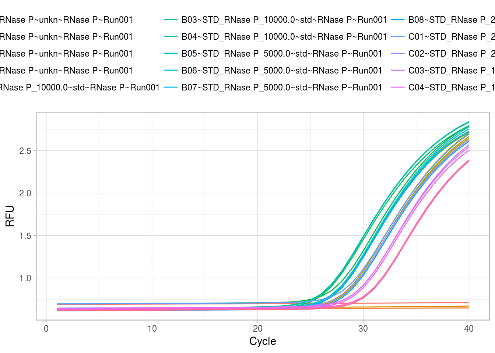

Using RDML with other R packages
Konstantin A. Blagodatskikh, Michał Burdukiewicz, Stefan Rödiger
2017-07-23
Practical Example for the Usage of the RMDL package
A key benefit of the RMDL package is that it enables further statistical analysis of RDML data. This section provides R packages that link with the RMDL package. Moreover, it will give an example how other packages allow the manipulation of RDML objects.
In this example we will use the qpcR package (Ritz and Spiess 2008) to calculate the Cq values after the selction of an optimal sigmoidal model as suggested by the Akaike’s An Information Criterion. The Cq value will be used to calculate the amplification efficiency from a calibration curve. The effcalc function from the chipPCR package (Rödiger, Burdukiewicz, and Schierack 2015) will be used for this task.
Note: The data used here sereve as an example only. Overall, the quality of the measurement is not appropriate for a further usage in a study. Here, we shwo that estimated amplification efficiency estimated by the StepOne system differs from the estimate as analyzed with the proposed pipeline (RDML \(\rightarrow\) qpcR \(\rightarrow\) chipPCR).
Preparation of the data
In section [xyz] it was shown how to read-in RDML data. In this section we will continoue with the built-in RDML example file stepone_std.rdml. This file was obtained during the measurement of human DNA concentration by a LightCycler 96 (Roche) and the XY-Detect kit (Syntol, Russia). The file is opened as described before:
library(RDML)
filename <- system.file("extdata/stepone_std.rdml", package = "RDML")
raw_data <- RDML$new(filename = filename)For convenice we use the pipe function %>% from the magrittr package for further analysis. Next we fetch the amplification curve data from the RDML file.
library(magrittr)
raw_data_tab <- raw_data$AsTable(
# Custom name pattern 'position~sample~sample.type~target~run.id'
name.pattern = paste(
react$position,
react$sample$id,
private$.sample[[react$sample$id]]$type$value,
data$tar$id,
run$id$id, # run id added to names
sep = "~"))
# Get all fluorescence data and assign them to the object fdata
fdata <- as.data.frame(raw_data$GetFData(raw_data_tab, long.table = FALSE))# Load the ggplot2 package for plotting
library(ggplot2)
# Load the reshape2 package to rearrange the data
library(reshape2)
# Rearrange and plot the raw data
fdata_gg <- melt(fdata, id.vars="cyc")
ggplot(data=fdata_gg, aes(x=cyc, y=value, color=variable)) +
geom_line() + labs(x="Cycle", y="RFU") + theme_light() +
theme(legend.position="top",
legend.direction="horizontal")
During the next steps comes the qpcR package into use. The function mselect performs a sigmoidal model selection by different criteria (e.g., bias-corrected Akaike’s Information Criterion). The function efficiency calculates the qPCR Cq values, amplification efficiency and other important qPCR parameters. In this example we set the parameter type of the efficiency funtion to Cy0. This will calculate the Cy0 value, which is the intersection of a tangent on the first derivative maximum with the abscissa as calculated according to Guescini et al. (2008).
The effcalc function was used to determine the coefficients of the calibration curve.
library(chipPCR)
res_efficiency <- effcalc(dilution[-c(1:3)], Cq_values[-c(1:3), ], logx=FALSE)
res_efficiency %>% plot(., CI=TRUE, main="Second Derivative Maximum Method")
# Combine the sample labels and the Cq values as calculate by the Second Derivative Maximum Method (cpD2).
sample_Cq <- data.frame(sample=c("ntc", "unk", 10000, 5000, 2500, 1250, 625), Cq_values)
# Print table of all Cq values
knitr::kable(sample_Cq, caption="Cq values as calculate by the
Second Derivative Maximum Method (cpD2).")| sample | X1 | X2 | X3 |
|---|---|---|---|
| ntc | NA | NA | NA |
| unk | 28.38 | 28.30 | 28.42 |
| 10000 | 27.39 | 27.38 | 27.30 |
| 5000 | 26.21 | 26.20 | 26.24 |
| 2500 | 27.28 | 27.32 | 27.32 |
| 1250 | 28.38 | 28.41 | 28.33 |
| 625 | 29.42 | 29.47 | 29.54 |
knitr::kable(res_efficiency, caption="Analysis of the amplification efficiency.")| Concentration | Location (Mean) | Deviation (SD) | Coefficient of Variance (RSD [%]) |
|---|---|---|---|
| 5000 | 26.21667 | 0.0208167 | 0.0007940 |
| 2500 | 27.30667 | 0.0230940 | 0.0008457 |
| 1250 | 28.37333 | 0.0404145 | 0.0014244 |
| 625 | 29.47667 | 0.0602771 | 0.0020449 |
The Cq values (28.38, 28.3, 28.42) from the unkown sample unk had an average Cq of 28.37 ± 0.06.
(and, if not, is this ever a problem?)
References
Guescini, Michele, Davide Sisti, Marco BL Rocchi, Laura Stocchi, and Vilberto Stocchi. 2008. “A New Real-Time PCR Method to Overcome Significant Quantitative Inaccuracy Due to Slight Amplification Inhibition.” BMC Bioinformatics 9 (1): 326. doi:10.1186/1471-2105-9-326.
Ritz, Christian, and Andrej-Nikolai Spiess. 2008. “qpcR: An R Package for Sigmoidal Model Selection in Quantitative Real-Time Polymerase Chain Reaction Analysis.” Bioinformatics 24 (13): 1549–51. doi:10.1093/bioinformatics/btn227.
Rödiger, Stefan, Michał Burdukiewicz, and Peter Schierack. 2015. “chipPCR: an R package to pre-process raw data of amplification curves.” Bioinformatics 31 (17): 2900–2902. https://bioinformatics.oxfordjournals.org/content/31/17/2900.abstract.